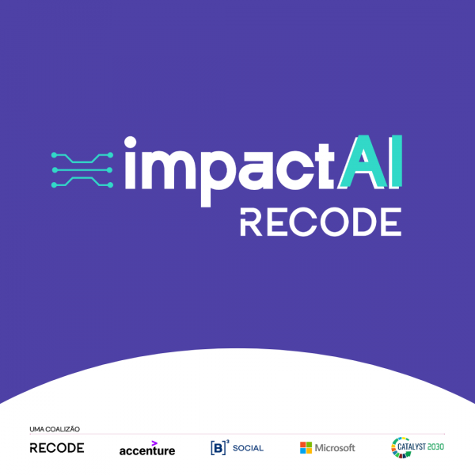
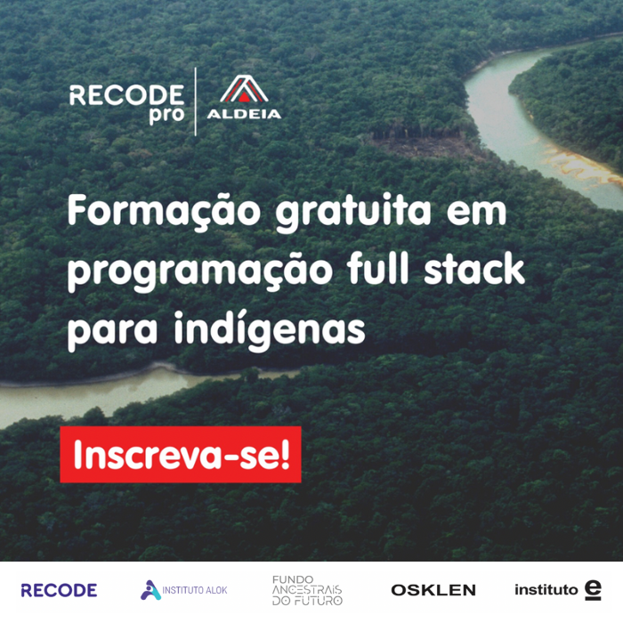
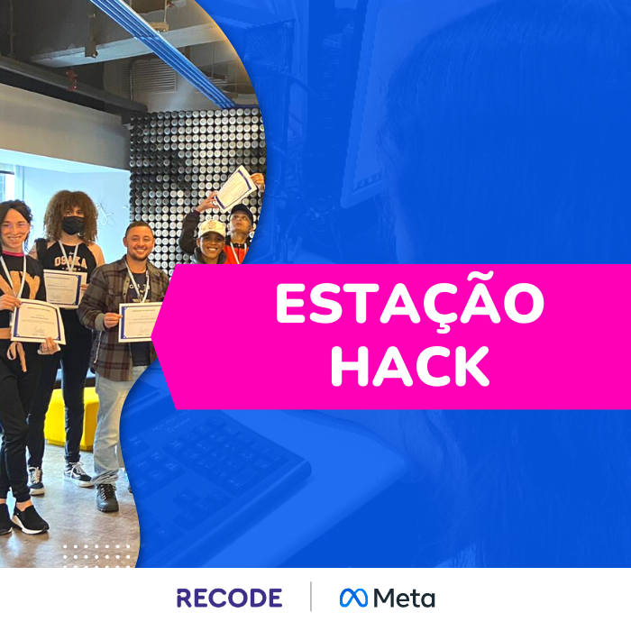

Movimento Comunicadoras Indígenas
Iniciativa realizada em parceria com a L'Oréal para capacitar mulheres indígenas em ferramentas digitais e produção de conteúdo.
Conheça o projetoConheça iniciativas que levam educação, tecnologia e novas oportunidades para pessoas e comunidades em diferentes contextos.
Faça parteDa programação à inteligência artificial, nossas iniciativas utilizam a tecnologia como ferramenta de transformação social, educação e desenvolvimento profissional.
Iniciativa realizada em parceria com a L'Oréal para capacitar mulheres indígenas em ferramentas digitais e produção de conteúdo.
Conheça o projeto
Formação em inteligência artificial generativa voltada principalmente para pessoas de baixa renda e em situação de vulnerabilidade social.
Conheça o projeto
Iniciativa gratuita de formação em programação full stack destinada a representantes dos povos indígenas.
Conheça o projeto
Parceria entre Recode e Meta que promoveu formações presenciais relacionadas à tecnologia em São Paulo.
Conheça o projetoIniciativa realizada pela Recode e Meta para pessoas interessadas em entrar no universo dos games e criar jogos com propósito.
Conheça o projetoPrograma nacional que utiliza bibliotecas como espaços de transformação social e digital, fortalecendo o protagonismo das comunidades.
Conheça o projetoSeja aluno, voluntário, organização parceira ou empresa. Existem diferentes maneiras de fazer parte dessa transformação.